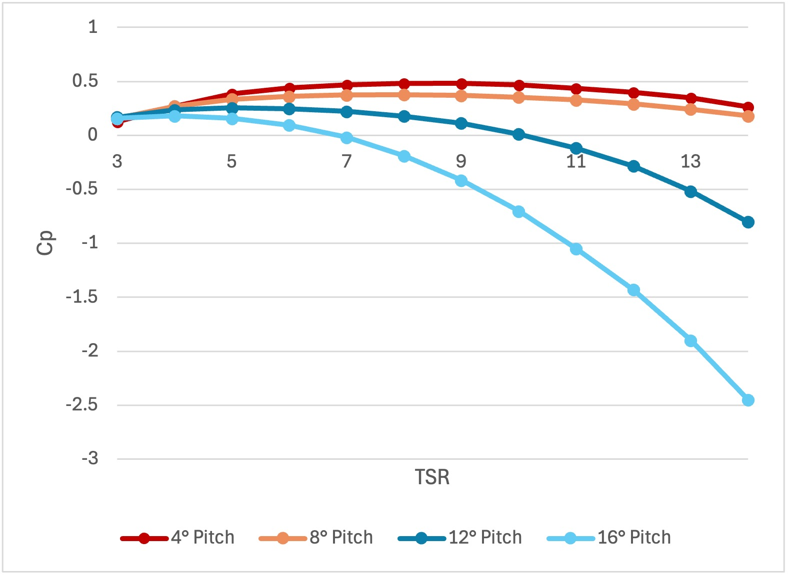

Overview
This project designed and analyzed a 2 MW offshore wind turbine for a wind farm located 20 km off the southern coast of the Kanto region in Japan, where average wind speeds average at 8.69 m/s at a 100 m hub height. The design process covered rotor sizing, airfoil selection, and blade geometry optimization, followed by performance validation using WT_PERF, a Blade Element Momentum (BEM) Theory simulation tool.
The Problem
Existing offshore wind farms in Japan average around 4.4 MW per turbine, serving the high power demands of the greater Tokyo area. The goal was to design a 2 MW turbine optimized for the specific wind conditions, balancing aerodynamic efficiency, structural integrity, and environmental/noise constraints. Key design challenges included selecting an appropriate tip speed ratio without over stressing the blade tip, choosing airfoils that perform well under rough offshore air conditions, and determining a chord and twist distribution that maximizes the power coefficient across the expected wind speed range.
Design
Hub height and rotor radius were found solving iteratively with MATLAB using the rated wind speed and power equations, converging to 0.01% relative error in 7 iterations to a blade radius of 33.4 m and hub height of 66.8 m. A tip speed ratio of 7 was selected, yielding an angular velocity of 2.58 rad/s and a tip speed of 86.14 m/s. Three airfoils from Dan Somers' family were chosen for different spanwise regions: the S818 at the root (to 45% span) for structural thickness, the S825 through the mid-span, and the thinner S826 at the tip to minimize drag where loading is greatest. Twist and chord distributions were calculated for 19 blade elements, with chord derived using the Betz limit to maximize theoretical power extraction. The resulting nonlinear chord distribution peaks near the root and tapers toward the tip, with small increases at each airfoil transition. The final design was validated and refined in WT_PERF, sweeping pitch angles from 4° to 16° and tip speed ratios from 5 to 15, comparing linear and nonlinear chord distributions across all conditions.
Results
The nonlinear chord distribution consistently outperformed the linear distribution across all tested conditions. The maximum power coefficient of 0.484 was achieved at a TSR of 9 and a fixed pitch of 4 degrees. At the site's average wind speed of 8.69 m/s, the turbine produces approximately 600 kW, with rated power of 2 MW reached at roughly 13 m/s. A fixed pitch of 4 degrees was recommended over variable pitch, as wind speeds rarely exceed the 13 m/s cutout threshold and the added mechanical complexity of a variable pitch system is difficult to justify for an offshore windfarm without high wind speeds. If higher wind speeds were more common, increasing pitch to 12 degrees above 13 m/s could extend operation to approximately 15.75 m/s.
Twist Distribution

Power Coefficient vs TSR
